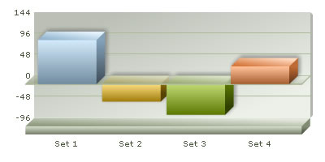
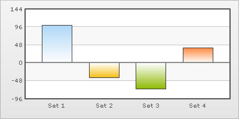
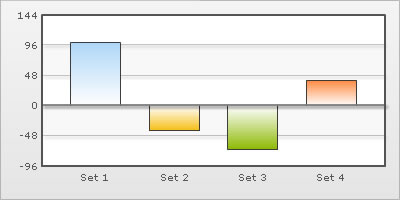

XML Attributes for Zero Plane |
|||||||||||||||
| Zero plane is a plane which separates the positive and negative numbers on a chart having both of them. | |||||||||||||||
|  | |||||||||||||||
|  | |||||||||||||||
| The zero plane appears in the column, line and the area chart. It can be removed in the line chart but not in the column or the area chart because they use this as their base to draw. It can be removed in the line chart by setting showZeroPlane='0'. | |||||||||||||||
| Customizing the zero plane | |||||||||||||||
| The customizable attributes for the zero plane in a 2D chart are: | |||||||||||||||
|
|||||||||||||||
| <chart zeroPlaneColor='000000' zeroPlaneThickness='1' zeroPlaneAlpha='80'....> | |||||||||||||||
| The attributes for the zero plane of a 3D chart are: | |||||||||||||||
|
|||||||||||||||
| <chartzeroPlaneColor='FFFFFF' zeroPlaneAlpha='80' zeroPlaneBorderColor='999999'....> | |||||||||||||||
| Applying effects to the zero plane | |||||||||||||||
| We can apply effects (shadow, glow, blur, bevel) to the div lines and zero plane using STYLES. To apply any style to the zero plane, we have to apply the style to the divisional lines. Here, we will see a chart having shadow for the div lines. | |||||||||||||||
|  | |||||||||||||||
<chart showValues='0' > </chart> |
|||||||||||||||
| Similarly, the other effects can be applied to the div lines & zero plane. | |||||||||||||||
| Animating div lines & zero plane | |||||||||||||||
You can also apply animation effects to the div lines & zero plane. In the XML given below, the x-Scale of the div lines & zero plane will be animated. |
|||||||||||||||
<chart showValues='0' > |
|||||||||||||||